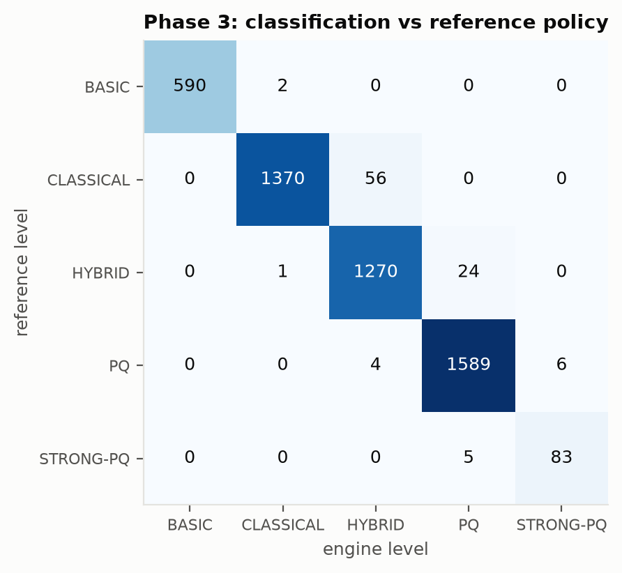
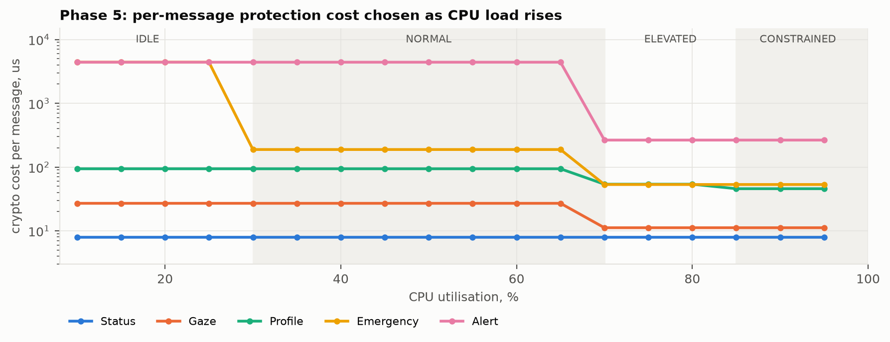
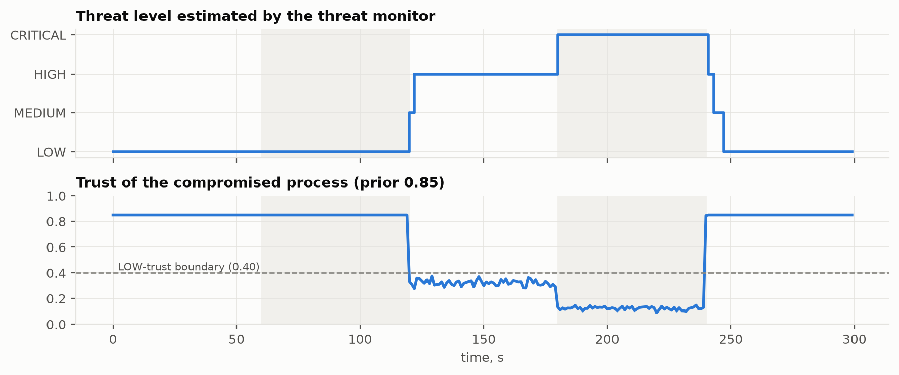
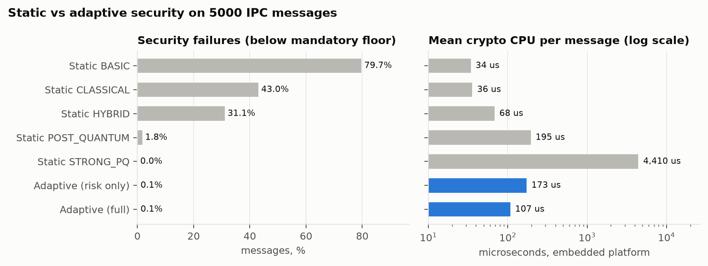
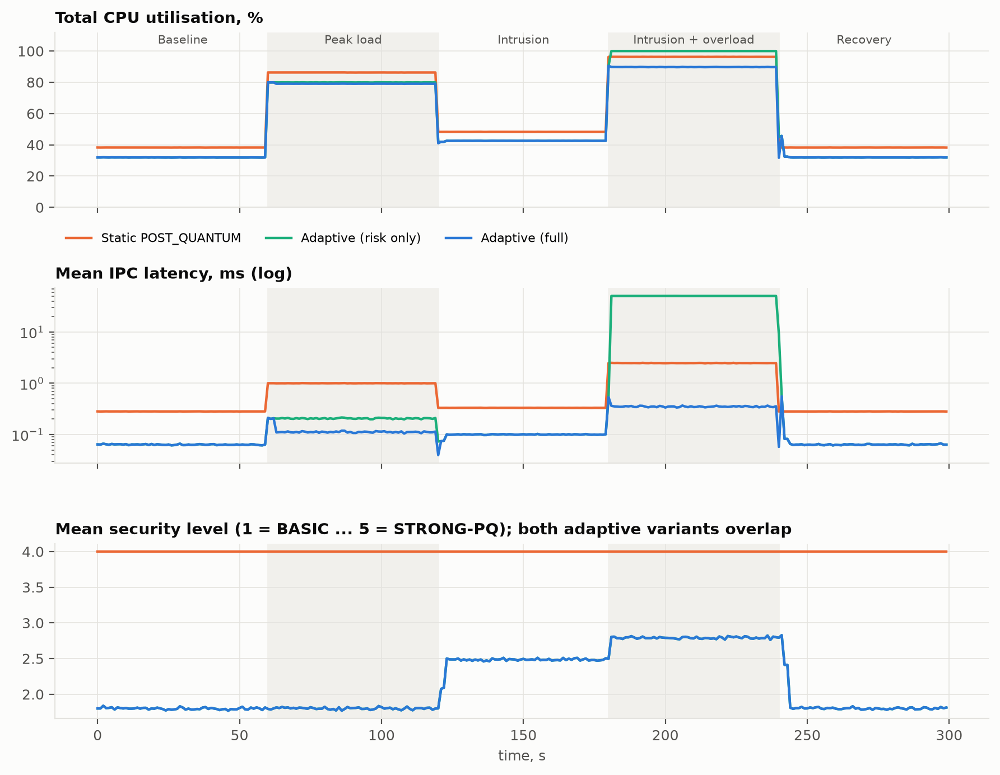

| Student | Aditya: Adaptive Security Policy Intelligence |
| Partner module | Deepanshu: Secure IPC & PQC Engine |
| Implementation | C++14, dependency-free; Python for figures |
| Status | All six phases implemented, tested (29/29) and evaluated |
| Date | October 2026 |
Conventional Inter-Process Communication (IPC) mechanisms deliver messages but do not adapt their protection to the sensitivity of the data, the trustworthiness of the communicating processes, the current threat situation or the resources available. Applying one uniform mechanism to every message either wastes CPU, memory and bandwidth on low-value traffic, or leaves sensitive and critical messages exposed to unauthorized access, tampering, replay and future quantum attacks. Long-lived secrets face a harvest-now-decrypt-later threat: ciphertext recorded today can be decrypted once a cryptographically relevant quantum computer exists.
The overall project builds an Adaptive Quantum-Aware Secure IPC Framework that selects classical, hybrid or post-quantum protection per message and measures the resulting security/performance trade-off. This report covers Module 1, the decision-making intelligence of the framework.
| Module 1: Aditya (this report) | Module 2: Deepanshu |
|---|---|
| Threat analysis, security parameters, classification, risk model, policy selection, resource adaptation, runtime threat/trust estimation, simulation and evaluation | Authentication, encryption, integrity, replay protection, classical / hybrid / post-quantum suites (ML-KEM, ML-DSA), the actual IPC transport |
Output: a SecurityProfile per message (level, algorithms, mode, re-key interval,
signature policy) | Output: a TransmissionReport (latency, bytes, authentication
result, detected attacks) |
Both modules start independently. Module 1 uses a synthetic IPC dataset and an analytical cost model
of the cryptographic suites, so it does not need Module 2 to be finished. The two modules meet at a single
interface, ISecureChannel (Section 11).
IPC MESSAGE (type, size, sensitivity S, criticality C, lifetime x)
|
RUNTIME CONTEXT ------------+------------------------------------------------------------
trust T (TrustManager) |
threat H (ThreatMonitor) v
CPU / memory (ResourceMon.) +-------------------------------+
| 1. Context extraction (Ph. 2) | all inputs -> [0,1], Mosca test
+---------------+---------------+
+---------------v---------------+
| 2. Requirement analysis (Ph.1)| services needed -> requirement floor
| 3. Risk assessment (Ph.3) | I, L, R -> risk band L1..L5
+---------------+---------------+
+---------------v---------------+
| 4. Policy selection (Ph.4) | required = max(band, floor)
| mandatory floor | no-downgrade rules for critical
+---------------+---------------+
+---------------v---------------+
| 5. Resource adaptation (Ph.5) | harden/keep/optimize/light
+---------------+---------------+
v
SecurityProfile ----------> ISecureChannel::transmit() [Module 2]
|
security events, auth results <-------+ (feedback to the monitors)
The engine is stateless per decision: the same message and context always produce the same decision, which
makes it testable and reproducible. All state that changes over time (trust, threat, smoothed utilisation) lives in
three runtime monitors that feed the context. Each stage records a human-readable explanation, so every decision can
be audited (aspe decide).
| Level | Key establishment | Authentication | Payload | Quantum-safe | NIST cat. | Re-key | Handshake B | State B |
|---|---|---|---|---|---|---|---|---|
| L1 BASIC | pre-provisioned key | HMAC-SHA-256 | integrity only | – | – | – | 0 | 240 |
| L2 CLASSICAL | X25519 ECDHE | Ed25519 | AES-256-GCM | no | – | 64 | 128 | 816 |
| L3 HYBRID | X25519 + ML-KEM-512 | Ed25519 | AES-256-GCM | confidentiality | 1 | 32 | 1,696 | 4,016 |
| L4 POST-QUANTUM | ML-KEM-768 | ML-DSA-65 | AES-256-GCM | conf. + auth. | 3 | 16 | 5,581 | 14,525 |
| L5 STRONG PQ | ML-KEM-1024 | ML-DSA-87, every message | AES-256-GCM | conf. + auth. | 5 | 4 | 7,763 | 18,979 |
The five levels extend the four levels of the roadmap (Basic, Classical, Hybrid, PQ) with the "Strong PQ" class used in the specification's example dataset. Object sizes are exact values from FIPS 203/204 and RFC 7748/8032. Optimized mode keeps the algorithms of a level, multiplies its re-key interval by 4 and replaces per-message signatures with session-level authentication.
Six IPC threats were analysed. Each one violates a security property and is countered by a mechanism provided at some level.
| Threat | Property | IPC attack vector | Countermeasure |
|---|---|---|---|
| Process impersonation | Authentication | squatting on a socket path / pipe / bus name, PID reuse | HMAC (L1), Ed25519 (L2–L3), ML-DSA (L4–L5) |
| Unauthorized access | Access control | world-readable shared memory, permissive queue ACLs, leaked handles | per-session keys held only by authenticated peers |
| Message tampering | Integrity | writable ring buffer, compromised broker, ptrace injection | MAC / AEAD tag on every message |
| Replay attack | Freshness | recorded traffic re-injected by a local attacker | sequence numbers, replay window, re-keying |
| Eavesdropping | Confidentiality | debug interfaces, /proc inspection, broker logs | AES-256-GCM with ephemeral keys |
| Harvest-now-decrypt-later | Quantum resistance | recorded ciphertext of long-lived secrets | ML-KEM (FIPS 203), ML-DSA (FIPS 204) |
Shor's algorithm breaks the discrete-logarithm problems behind X25519 and Ed25519. Grover's algorithm halves the effective strength of symmetric keys, so AES-256 keeps about 128-bit security. Exposure is decided with Mosca's inequality: data is at risk if x + y > z, where x is how long the data must stay confidential, y = 5 years is the migration time and z = 15 years is a conservative estimate of the time to a cryptographically relevant quantum computer. Data that must stay secret for more than 10 years therefore needs quantum-safe key establishment today.
| Required service | Condition | Lowest level providing it |
|---|---|---|
| integrity, origin authentication | always | L1 |
| anti-replay | C ≥ MEDIUM or H ≥ HIGH | L1 (all levels) |
| confidentiality | S ≥ MEDIUM | L2 |
| strong (asymmetric) authentication | trust LOW, or H ≥ HIGH, or C ≥ HIGH | L2 |
| quantum-safe confidentiality | confidential and (Mosca-exposed or critical asset) | L3 |
| quantum-safe authentication | S or C = CRITICAL | L4 |
The requirement floor is the lowest level that provides every required service. No later stage, including resource adaptation, may select a level below it. The suite selected for each message is checked against the requirements at run time.
| Parameter | Symbol | Domain | Normalisation to [0,1] |
|---|---|---|---|
| Message sensitivity | S | LOW, MEDIUM, HIGH, CRITICAL | ordinal / 3 |
| Communication criticality | C | LOW, MEDIUM, HIGH, CRITICAL | ordinal / 3 |
| Threat level | H | LOW, MEDIUM, HIGH, CRITICAL (from the threat monitor) | ordinal / 3 |
| Process trust | T | score in [0,1]; LOW < 0.4 ≤ MEDIUM < 0.7 ≤ HIGH | distrust D = 1 − T |
| CPU utilisation | Ucpu | 0–100 % | value / 100 |
| Memory utilisation | Umem | 0–100 % | value / 100 |
| Message size | M | bytes | log2(M/16)/16 (16 B → 0, 1 MiB → 1) |
| Confidentiality lifetime | x | years | Mosca test x + y > z |
| Resource pressure (derived) | P | – | max(Ucpu, Umem) |
Parameters are split into message attributes (S, C, M, x), which are known when the message is created, and the runtime context (T, H, Ucpu, Umem), which is measured by the monitors at send time. Resource pressure takes the worse of CPU and memory, because either one can be the bottleneck.
The classification follows the roadmap pipeline: sensitivity analysis → process-trust analysis → threat assessment → criticality assessment → security level. Impact and likelihood are separated, following the NIST SP 800-30 view of risk:
The max term lets one severe dimension dominate impact: a CRITICAL message stays critical even if its criticality is low. The interaction term wX·I·L raises risk sharply when high impact and high likelihood occur together. R is monotone in every input, and a property test verifies this on the full input grid.
Algorithm 1 - Classify(message m, context c)
v <- ExtractContext(m, c) // Phase 2, every component in [0,1]
req <- AnalyzeRequirements(v) // Phase 1
floor <- MinimumLevelProviding(req)
I <- a*max(v.S, v.C) + (1-a)*(v.S + v.C)/2
L <- b*v.H + (1-b)*v.D
R <- wI*I + wL*L + wX*I*L
band <- 1 + |{ k : R >= theta_k }|
return level = max(band, floor), with R, band, floor and an explanation trace
| Message | S | Trust | Threat | C | CPU | Risk R | Band | Floor | Engine level | Specified |
|---|---|---|---|---|---|---|---|---|---|---|
| Status | LOW | HIGH | LOW | LOW | 30 % | 0.018 | L1 | L1 | BASIC | Basic ✓ |
| Gaze | MEDIUM | HIGH | LOW | MEDIUM | 40 % | 0.182 | L2 | L2 | CLASSICAL | Secure ✓ |
| Profile | HIGH | MEDIUM | MEDIUM | HIGH | 50 % | 0.484 | L3 | L2 | HYBRID | Hybrid ✓ |
| Emergency | CRITICAL | MEDIUM | HIGH | CRITICAL | 60 % | 0.769 | L4 | L4 | POST-QUANTUM | PQ ✓ |
| Alert | CRITICAL | LOW | HIGH | CRITICAL | 80 % | 0.858 | L5 | L4 | STRONG PQ | Strong PQ ✓ |
At 80 % CPU, Alert is in the ELEVATED resource state. The engine keeps STRONG PQ and switches to optimized parameters; it never downgrades a critical message (Section 8).
Because no labelled IPC security dataset exists, a reproducible generator (seed 42) produces 5000 messages from 11 application archetypes: Status, Heartbeat, Telemetry, Gaze, Configuration, Profile, Credential, Payment, Emergency, Alert and KeyMaterial. Each archetype has typical sensitivity, criticality, size and lifetime, and with probability 0.25 these attributes are shifted by one step. Trust, threat and CPU/memory load are drawn independently. Each message is labelled by an independent reference policy that plays the role of an expert security officer. The reference policy is a qualitative 4×4 risk matrix (impact tier = max(S,C); likelihood tier = H + [trust LOW] − [trust HIGH]) plus Mosca's rule. The engine never sees this policy. It is only used to measure and calibrate the engine, which makes the accuracy figures meaningful.
| Reference level | Records | Share |
|---|---|---|
| L1 BASIC | 592 | 11.8 % |
| L2 CLASSICAL | 1,426 | 28.5 % |
| L3 HYBRID | 1,295 | 25.9 % |
| L4 POST-QUANTUM | 1,599 | 32.0 % |
| L5 STRONG PQ | 88 | 1.8 % |
The eight model parameters (a, b, wI, wL, wX, θ1..4) are fitted on a 70 % training split and evaluated on the remaining 30 %. The objective is asymmetric: protecting a message k levels too weakly costs 4k, protecting it too strongly costs k. The five specification scenarios are hard constraints.
Algorithm 3 - Calibrate(train set D, anchors A)
cost(p) = mean over D of 4*(required - predicted) if under-protected,
(predicted - required) otherwise
+ 10 * |anchors in A misclassified|
sample 6000 parameter vectors (weights ~ Dirichlet(1,1,1), sorted thresholds)
keep the 8 best; refine each by coordinate search
(step 0.05, halved when no move improves, stop below 0.0025)
return the best refined vector; report test-split metrics
| Model | Split | Accuracy | Under-protection | Over-protection | Macro-F1 |
|---|---|---|---|---|---|
| neutral (equal weights, even thresholds) | test | 74.1 % | 25.9 % | 0.0 % | 0.724 |
| calibrated | test | 97.6 % | 0.3 % | 2.1 % | 0.974 |
| calibrated | train | 98.2 % | 0.1 % | 1.7 % | 0.974 |
Result: a = 0.844, b = 0.517, wI = 0.473, wL = 0.247, wX = 0.280, θ = (0.078, 0.298, 0.514, 0.805). These are the engine's built-in defaults. Train and test scores are close, so the model does not overfit. The asymmetric cost makes the remaining errors over-protections (2.1 %) rather than under-protections (0.3 %). Runs on 1000 and 3000 records gave 98.7 % and 99.3 % test accuracy with similar parameters, so the result is stable.

After the required level is known, the engine computes a mandatory floor and then adapts to the resource state.
| Resource state | Pressure P | Action |
|---|---|---|
| IDLE | < 30 % | Harden one level if the threat is HIGH or worse and R lies within 0.05 of the next band (spare capacity buys margin) |
| NORMAL | 30–70 % | apply the required level unchanged |
| ELEVATED | 70–85 % | Optimize: same algorithms, re-key interval ×4, session-level instead of per-message signatures |
| CONSTRAINED | ≥ 85 % | Lightweight: one level down with optimized parameters, only if above the floor and actually cheaper; otherwise optimize in place |
Algorithm 2 - SelectPolicy(m, c)
cls <- Classify(m, c); req <- cls.level
floor <- (critical asset or H = CRITICAL) ? req : max(cls.floor, req - 1)
state <- ResourceState(max(cpu, mem)); level <- req; mode <- STANDARD
if state = IDLE and H >= HIGH and R near next band:
level <- req + 1 // harden
if state = ELEVATED: mode <- OPTIMIZED // optimize
if state = CONSTRAINED:
keep <- cost(req, OPTIMIZED); light <- cost(req - 1, OPTIMIZED)
if req > floor and light < keep:
level <- req - 1; mode <- OPTIMIZED // lightweight
else mode <- OPTIMIZED
assert level >= floor and Suite(level) provides cls.requirements
return SecurityProfile(level, mode), estimated cost, explanation
The "only if cheaper" condition came out of testing. A property test found that dropping CLASSICAL to BASIC can cost more for large messages, because HMAC-SHA-256 is slower per byte than AES-GCM. A naive rule would give up security for nothing.
| Message | Required | CPU 20 % (idle) | CPU 50 % (normal) | CPU 75 % (elevated) | CPU 90 % (constrained) |
|---|---|---|---|---|---|
| Status | BASIC | BASIC, 8 µs | BASIC, 8 µs | BASIC, 8 µs | BASIC, 8 µs |
| Gaze | CLASSICAL | CLASSICAL, 27 µs | CLASSICAL, 27 µs | CLASSICAL opt, 11 µs | CLASSICAL opt, 11 µs |
| Profile | HYBRID | HYBRID, 94 µs | HYBRID, 94 µs | HYBRID opt, 54 µs | CLASSICAL opt, 46 µs |
| Emergency | PQ | STRONG PQ, 4,403 µs | PQ, 188 µs | PQ opt, 53 µs | PQ opt, 53 µs |
| Alert | STRONG PQ | STRONG PQ, 4,401 µs | STRONG PQ, 4,401 µs | STRONG PQ opt, 265 µs | STRONG PQ opt, 265 µs |
Per-message cost on the embedded platform model. The sweep reproduces the three rules of the roadmap: high risk + sufficient resources → full PQ protection; high risk + constrained resources → optimized policy (never downgraded); low risk + constrained resources → lightweight protection.

The dynamic inputs are not supplied by hand. Three monitors estimate them from what the secure IPC layer observes:

Seven strategies are compared: static BASIC, CLASSICAL, HYBRID, PQ and STRONG PQ (one level for every message), Adaptive (risk only) (Phases 1–4) and Adaptive (full) (with Phase 5). The metrics are those of the roadmap:
| Roadmap metric | How it is measured |
|---|---|
| Security level | mean level; share meeting the reference level; security failures = share below the mandatory floor; PQ coverage |
| Latency | per-message crypto time (dataset); service + queueing delay with an M/D/1 fluid queue (simulation) |
| CPU utilisation | crypto CPU per message; total CPU = background + crypto load (simulation) |
| Memory | key material and context bytes per session |
| Throughput | sustainable messages/s; share delivered within the 50 ms IPC deadline |
| Message overhead | bytes added on the wire per message (framing + amortised handshake + signatures) |
Costs come from an analytical model: exact object sizes, and timing estimates for reference implementations on a 3 GHz x86-64 core, scaled by 6 for an embedded ARM-class device with 2 crypto cores. These model values are replaced by measurements of the partner engine after integration (Section 13).
| Strategy | Mean level | Meets ref. | Security failures | PQ coverage | CPU µs/msg | Overhead B | State B | Max msg/s |
|---|---|---|---|---|---|---|---|---|
| Static BASIC | 1.00 | 11.8 % | 79.7 % | 0 % | 34 | 40 | 240 | 58,547 |
| Static CLASSICAL | 2.00 | 40.4 % | 43.0 % | 0 % | 36 | 38 | 816 | 56,016 |
| Static HYBRID | 3.00 | 66.3 % | 31.1 % | 100 % | 68 | 89 | 4,016 | 29,391 |
| Static POST-QUANTUM | 4.00 | 98.2 % | 1.8 % | 100 % | 195 | 385 | 14,525 | 10,277 |
| Static STRONG PQ | 5.00 | 100 % | 0.0 % | 100 % | 4,410 | 6,604 | 18,979 | 454 |
| Adaptive (risk only) | 2.85 | 99.8 % | 0.1 % | 100 % | 173 | 281 | 6,359 | 11,591 |
| Adaptive (full) | 2.79 | 93.7 % | 0.1 % | 93.1 % | 107 | 180 | 6,164 | 18,609 |
Uniform security forces a bad choice. Cheap static policies fail 31–80 % of messages. Static PQ fails 1.8 % (it cannot provide STRONG PQ) and still costs 1.8× the CPU of the adaptive engine. Static STRONG PQ is safe but costs 41× more CPU and 37× more wire overhead, and sustains only 454 msg/s. The adaptive engine fails 0.1 % (residual classification error) with 45 % less CPU than static PQ. Its lower "meets reference" score (93.7 %) comes from sanctioned lightweight decisions under CONSTRAINED load, which always stay at or above the mandatory floor.

Eleven IPC channels (≈865 msg/s) run for 300 s on the embedded platform. The scenario has five phases: baseline (30 % background CPU), peak load (78 %), intrusion (a compromised telemetry agent injects forged messages, threat HIGH), intrusion under overload (88 %, threat CRITICAL), and recovery. The adaptive strategies only see the system through the monitors, so they react with a realistic detection lag. The reference uses the ground truth. All strategies get identical random input.
| Strategy | Delivered | Mean lat. ms | p95 ms | p99 ms | Mean CPU | Peak CPU | Mean level | Meets ref. | Failures | Overhead B |
|---|---|---|---|---|---|---|---|---|---|---|
| Static BASIC | 100 % | 0.09 | 0.37 | 0.81 | 54.3 % | 89.2 % | 1.00 | 27.5 % | 63.2 % | 40 |
| Static CLASSICAL | 100 % | 0.12 | 0.29 | 0.49 | 54.6 % | 89.4 % | 2.00 | 72.6 % | 19.3 % | 38 |
| Static HYBRID | 100 % | 0.24 | 0.59 | 0.78 | 56.0 % | 90.8 % | 3.00 | 89.8 % | 9.5 % | 89 |
| Static POST-QUANTUM | 100 % | 0.88 | 2.49 | 2.68 | 61.5 % | 96.3 % | 4.00 | 98.7 % | 1.3 % | 385 |
| Static STRONG PQ | 24.6 % | 59.38 | 86.66 | 86.67 | 100 % | 100 % | 5.00 | 100 % | 0.0 % | 6,604 |
| Adaptive (risk only) | 96.5 % | 8.56 | 50.48 | 50.75 | 57.3 % | 100 % | 2.14 | 99.5 % | 0.4 % | 164 |
| Adaptive (full) | 100 % | 0.14 | 0.40 | 2.21 | 55.1 % | 90.6 % | 2.14 | 99.5 % | 0.4 % | 74 |

The policy decision itself was timed on the development machine (x86-64, MinGW g++ -O2) at ~0.2–0.3 µs per decision (3.5–5 million decisions/s on one core). That is about 1 % of the mean protection cost it selects, and the decision path performs no heap allocation.
Integration needs exactly one class on the partner side. Everything else, including policy selection, monitors
and feedback, is already wired in SecureIpcFramework.
// Implemented by Module 2 (Deepanshu)
class ISecureChannel {
public:
virtual ~ISecureChannel() = default;
virtual std::string name() const = 0;
virtual TransmissionReport transmit(const IpcMessage& message,
const SecurityProfile& profile) = 0;
};
struct SecurityProfile { // produced by Module 1 for every message
SecurityLevel level; // BASIC .. STRONG_PQ -> algorithms via suite()
ProtectionMode mode; // STANDARD | OPTIMIZED
uint32_t rekeyInterval; // messages per session key
bool perMessageSignature, replayProtection;
};
struct TransmissionReport { // returned by Module 2, fed back into the monitors
bool delivered, peerAuthenticated;
double latencyMicros; uint32_t wireBytes;
std::vector<SecurityEvent> events; // replay, tampering, auth failures ...
};
| Step | Integration task | Owner |
|---|---|---|
| 1 | Implement ISecureChannel on top of the PQC engine (e.g. liboqs for ML-KEM / ML-DSA, AES-256-GCM) | Deepanshu |
| 2 | Replace ModelledSecureChannel with the real channel in SecureIpcFramework (one line) | Aditya |
| 3 | Measure the real per-suite costs and load them into the cost model; re-run Phase 5 and 6 | both |
| 4 | Map detected attacks (replay, MAC failure, failed handshake) to SecurityEvents | Deepanshu |
| 5 | End-to-end test: aspe demo and the simulation scenario on the real channel | both |
A language-neutral path is also available: aspe decide --json emits each decision as JSON (level,
algorithms, mode, re-key interval, signature flag, estimated cost), so a non-C++ engine can consume the policy.
aspe demo already runs the complete loop through the interface with the modelled channel.
| Module (include/aspe/) | Responsibility |
|---|---|
types.h, util.h | domain types; portable deterministic RNG, statistics, tables, file helpers |
threat_analysis.h | Phase 1: threat catalogue, requirement analysis, requirement floor |
parameters.h | Phase 2: parameter catalogue, context extraction, Mosca horizon |
risk_model.h, classifier.h | Phase 3: risk model, classification with explanation trace |
crypto_suite.h | suites per level, security services, cost model, platforms |
policy_engine.h | Phases 4–5: mandatory floor, adaptive selection, JSON export |
runtime_monitor.h | threat monitor, Beta-reputation trust, resource monitor |
dataset.h, evaluation.h, simulation.h | dataset and reference policy, calibration, metrics, closed-loop simulation |
integration.h | ISecureChannel, SecureIpcFramework, modelled channel |
make, CMake or build.bat, and compiles warning-free with -Wall -Wextra -Wpedantic -Wshadow.std::mt19937, so datasets and results are identical on every compiler.
aspe all regenerates every number in this report.aspe, with a sub-command per phase (analyze, params, generate, classify, calibrate,
decide, adapt, evaluate, simulate, bench, demo, all).| Phase | Deliverable | Status |
|---|---|---|
| 1 | IPC threat analysis, requirement analysis | complete |
| 2 | Measurable, normalised parameters | complete |
| 3 | Classification algorithm and threat/risk model | complete; 98.0 % agreement |
| 4 | Policy-selection algorithm, experimental calibration | complete; 97.6 % on test split |
| 5 | Adaptive, performance-aware decision mechanism | complete; invariants verified |
| 6 | Simulation results and performance analysis | complete (dataset + closed-loop simulation) |
| – | Integration interface for Module 2 | complete; awaiting the partner channel |
ISecureChannel implementation and replace the modelled channel.